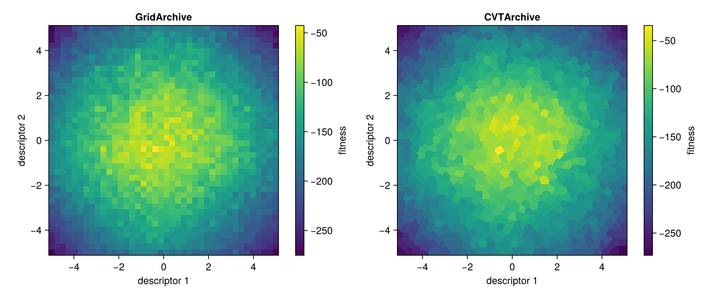
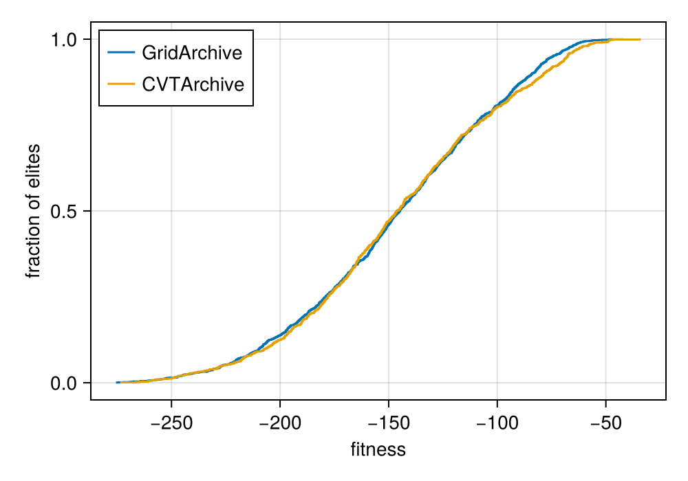
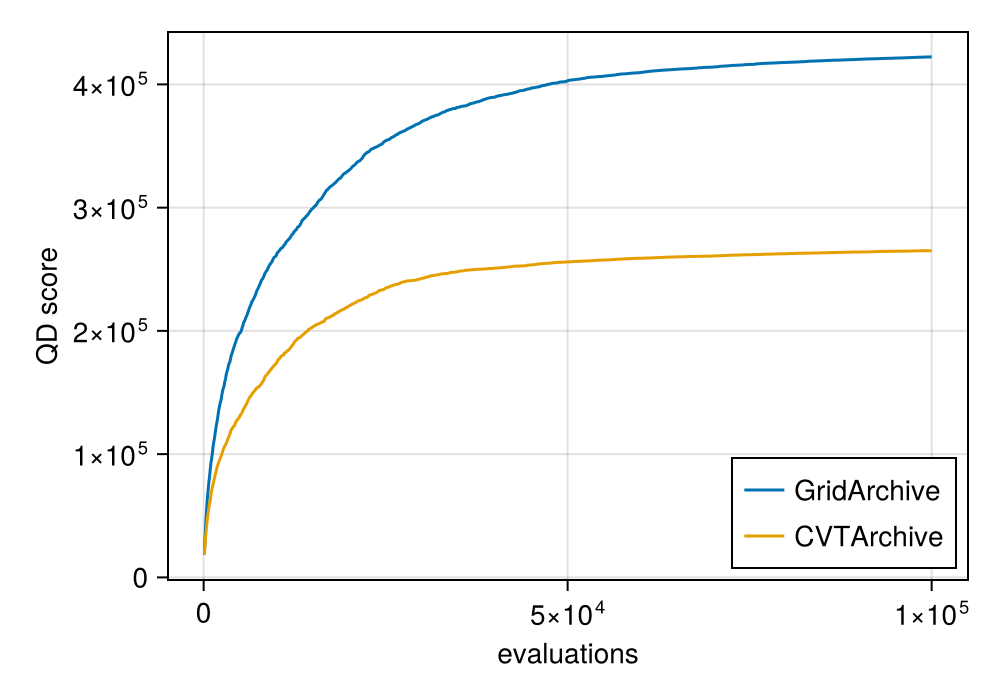
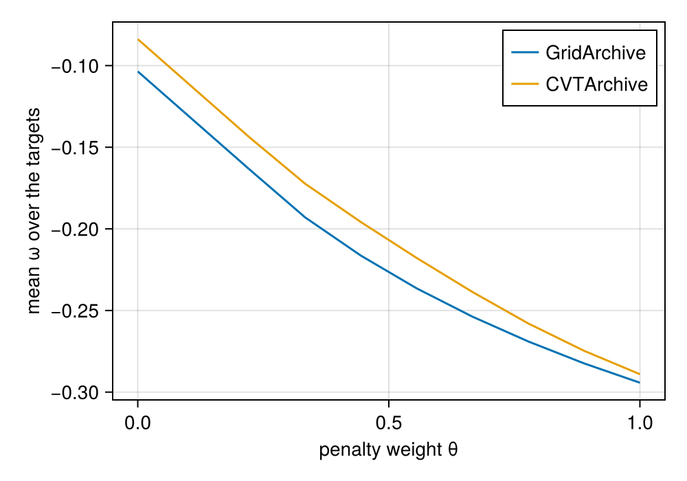

Plotting archives
Plotting lives in a package extension: loading a Makie backend, such as CairoMakie or GLMakie, adds plot recipes for archives, and the package gains no plotting functions of its own. The recipes are
heatmap(archive)for an archive with two descriptor dimensions,ecdfplot(archive)for the distribution of the elite fitness, andlines(cqd_score(...))for the continuous QD score against its penalty weight.
Run it from the repository root, after the one-time setup
julia --project=examples -e 'using Pkg; Pkg.develop(path="."); Pkg.instantiate()'with
julia --project=examples examples/heatmap.jlIt saves the figures next to this file.
using QualityDiversity
using CairoMakie
using Random: XoshiroTwo archives
The same problem and budget, once with a grid and once with a centroidal Voronoi tessellation (CVT) of 1000 cells.
prob = Rastrigin(10)
bounds = QualityDiversity.descriptor_bounds(prob)
variation = GaussianMutation(0.5)
grid = solve(prob, MAPElites(prob; dims=(40, 40), batch_size=100, variation); budget=100_000, rng=Xoshiro(1))
cvt = solve(prob, MAPElites(CVTArchive(Xoshiro(1), 1_000, bounds); batch_size=100, variation);
budget=100_000, rng=Xoshiro(1))QDResult after 100000 evaluations
archive: CVTArchive with 1000 of 1000 cells occupied
qd_score: 265114.70934312104
coverage: 1.0
max_fitness: -34.367035149932164
mean_fitness: -144.88529065687894Heatmaps
heatmap!(ax, archive) draws the fitness of every cell; empty cells are transparent. A grid shows one rectangle per cell, a CVT archive its Voronoi cells. Archives that wrap another, such as a ThresholdArchive, show the archive of their best solutions.
fig = Figure(size=(1000, 420))
for (column, (title, result)) in enumerate(("GridArchive" => grid, "CVTArchive" => cvt))
ax = Axis(fig[1, 2*column-1]; title, xlabel="descriptor 1", ylabel="descriptor 2", aspect=1)
hm = heatmap!(ax, result.archive)
Colorbar(fig[1, 2*column], hm; label="fitness")
end
fig
Distribution of the elite fitness
ecdfplot shows, for each fitness value, the fraction of elites at or below it. Unlike the QD score it does not sum over the cells, so it compares archives of different sizes.
fig = Figure(size=(500, 350))
ax = Axis(fig[1, 1]; xlabel="fitness", ylabel="fraction of elites")
ecdfplot!(ax, grid.archive; label="GridArchive")
ecdfplot!(ax, cvt.archive; label="CVTArchive")
axislegend(ax; position=:lt)
fig
Metrics over a run
result.history holds the metrics after every round, so the progress of a run is a line plot.
fig = Figure(size=(500, 350))
ax = Axis(fig[1, 1]; xlabel="evaluations", ylabel="QD score")
for (label, result) in ("GridArchive" => grid, "CVTArchive" => cvt)
lines!(ax, [r.n_evals for r in result.history], [r.qd_score for r in result.history]; label)
end
axislegend(ax; position=:rb)
fig
Continuous QD score
The QD score depends on the cells of an archive. The continuous QD score (Kent et al., 2022) does not: it asks, for random target descriptors, how good the elite that the archive recommends is, with a penalty for its distance from the target that grows with a weight θ. lines(result) plots the mean score against θ.
fitness_range = (-QualityDiversity.fitness_offset(prob), 0.0) # the range of Rastrigin(10)
fig = Figure(size=(500, 350))
ax = Axis(fig[1, 1]; xlabel="penalty weight θ", ylabel="mean ω over the targets")
for (label, result) in ("GridArchive" => grid, "CVTArchive" => cvt)
score = cqd_score(Xoshiro(2), result.archive; num_targets=200, fitness_range)
lines!(ax, score; label)
end
axislegend(ax)
fig